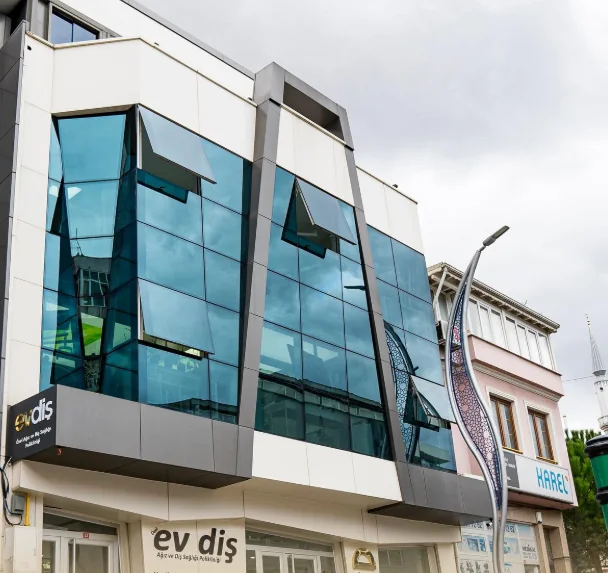
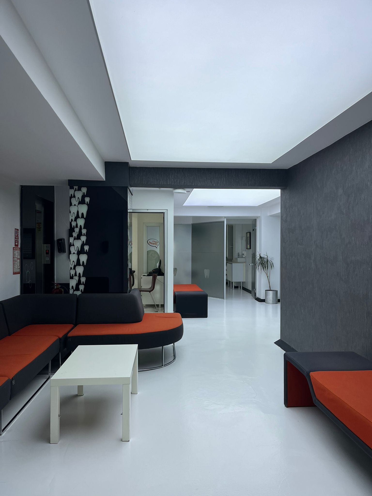

Merkezi Konum ve Çalışma Saatleri
Yenidoğan Mah. Fabrika Cad. No: 33 Adapazarı adresinde Hafta İçi 08.30 – 19.00, Cumartesi 08.30 – 18.00 saatleri arasında hizmet vermektedir (Pazar kapalıdır).
Adres: Yenidoğan Mahallesi Fabrika Caddesi No: 33, 54100 Adapazarı / Sakarya · Telefon: 0 (264) 606 00 60 · GSM / WhatsApp: 0 (545) 606 00 69

Yenidoğan Mah. Fabrika Cad. No: 33 Adapazarı adresinde Hafta İçi 08.30 – 19.00, Cumartesi 08.30 – 18.00 saatleri arasında hizmet vermektedir (Pazar kapalıdır).

İlk muayene, dijital panoramik röntgen, restoratif/estetik diş hekimliği, kanal tedavisi, diş eti bakımı ve protetik planlama işlemleri yürütülmektedir.
Adapazarı şubemizde muayene ve tedavi planlaması dijital panoramik görüntüleme ile desteklenmekte; tedaviler hasta konforu gözetilerek tasarlanmış modern tedavi ünitlerinde yürütülmektedir.
Hangi işlem altyapısının hangi şubemizde bulunduğunu gösterir. Tanı ve tedavi planı muayenede hekiminizce belirlenir.
İstiklal Mah. 2. Cad. No: 13 · Hafta içi 08.30–19.00 · Cumartesi 08.30–18.00
Şube detayı →Ameliyathane, genel anestezi/sedasyon ya da 3B tomografi (CBCT) gerektiren ileri işlemler Serdivan Merkez ile koordineli planlanır.
Yenidoğan Mah. Fabrika Cad. No: 33 · Hafta içi 08.30–19.00 · Cumartesi 08.30–18.00
Şube detayı →Adapazarı (Fabrika Caddesi) şubemizde diş hekimlerimiz Dt. Mehmet Emre Türkhan ve Dt. Yasa Akdoğan görev yapmaktadır. İleri cerrahi, ortodonti veya sedasyon gerektiren durumlarda Serdivan Merkez Şubemizdeki uzman hekimlerimizle koordineli planlama sağlanır.
Hafta içi 08.30–19.00 ve Cumartesi 08.30–18.00 saatleri arasında 0 (264) 606 00 60 numaralı çağrı merkezimizden veya 0 (545) 606 00 69 WhatsApp danışma hattımızdan Adapazarı şubesi tercihinizi belirterek randevu oluşturabilirsiniz.